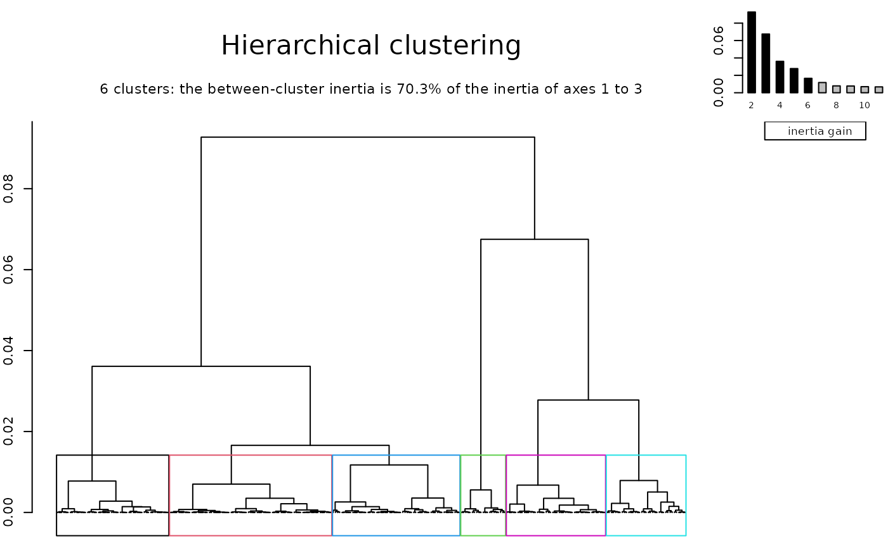
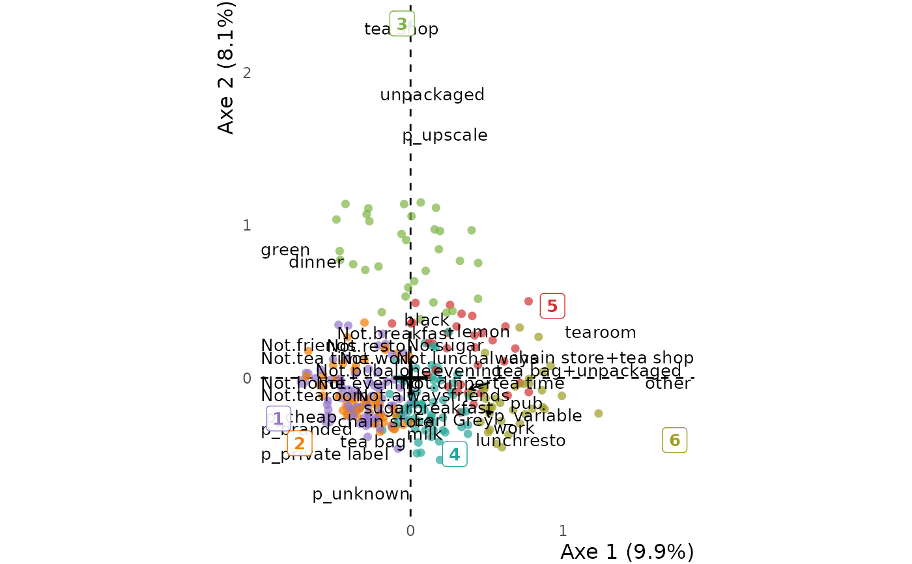

Clusters the individuals of a principal component analysis or of a multiple correspondence
analysis, or the levels of one margin of a correspondence analysis, on the first `ncp` axes. The
clusters are those of FactoMineR::HCPC: Ward's hierarchical
clustering, cut into `nb_clust` clusters, then consolidated by k-means. Use it inside
dplyr::mutate() to add them to the data frame:
`data <- data |> mutate(clust = hierarchical_clust(res, ncp = 3, nb_clust = 6))`
To choose the number of clusters, look at the tree first: `hierarchical_clust(res, ncp = 3)`.
The tree is built once: cutting it again, into another number of clusters or with names, is
instant. Name the clusters with `names`, then describe them with clust_tab and
draw them with ggfacto(clust = ).
Usage
hierarchical_clust(
res,
ncp,
nb_clust = -1,
tree = nb_clust == -1,
consol = TRUE,
margin = "rows",
names = NULL
)Arguments
- res
An analysis made with
multiple_correspondence_analysis,principal_component_analysisorcorrespondence_analysis(or withFactoMineR::MCA(),PCA()orCA(), orGDAtools::speMCA()orcsMCA(), whose subcloud alone is clustered).- ncp
The number of axes to cluster on: the first ones, those worth interpreting (see the eigenvalues under
interpret). There is no default: on every axis, the clustering would follow noise.- nb_clust
The number of clusters. With `-1`, the default, the tree is cut where the gain in between-cluster inertia drops the most. Given `names`, it is the number of names.
- tree
Should the clustering tree be drawn, to choose the number of clusters? By default, only when `nb_clust = -1`. Its leaves are the distinct points of the cloud: the answer profiles of a multiple correspondence analysis, the levels of a correspondence analysis. Each bar of the inertia gains carries the number of clusters it makes, and the title the share of the inertia of the `ncp` axes that lies between the clusters drawn.
- consol
The k-means consolidation, which moves each individual to its nearest cluster once the tree is cut. `TRUE`, the default, is
FactoMineR::HCPC's k-means, which counts every individual once, weights or not. `"weighted"` counts each by its weight (the survey weights, or a level's count in a correspondence analysis) with a simpler k-means, Lloyd's, which can place a few individuals differently even without weights. `FALSE` keeps the clusters as the tree cuts them.- margin
For a correspondence analysis, the levels to cluster: `"rows"`, the default, or `"columns"`.
- names
The names of the clusters, in the order the levels should take: either `c("Name 1", "Name 2", ...)`, for clusters 1, 2, etc., or `c("Name" = 2, "Other name" = 1, ...)`, as in
forcats::fct_recode(). Clusters are numbered along the first axis, so the names belong to one cut of one tree: write them after looking at that cut.
Value
A factor with the clusters, `"1"`, `"2"`, etc. or their `names`, numbered along the first
axis and returned invisibly: a bare call only draws the tree. Inside dplyr::mutate(), it
has one value per row of that data frame, and `NA` on the rows the analysis did not use (when it
was made on a subset of the population). Outside mutate(), it has one value per row of the
data frame the analysis started from. For a correspondence analysis, each row of the data frame
gets the cluster of its level (`NA` for a level outside the table); outside mutate(),
there is one value per level, named after it.
Details
The tree is kept in memory for the session, under a key made of everything it is built from — the coordinates on the `ncp` axes, the weights, the answer profiles — so a tree made from other data is never reused. The last 20 trees are kept; `options(ggfacto.clust_cache = 50)` keeps more, and `options(ggfacto.clust_cache = 0)` none.
Examples
data(tea, package = "FactoMineR")
res.mca <- multiple_correspondence_analysis(tea, 1:18)
# The tree, to choose the number of clusters, then the clusters, written into the data frame
hierarchical_clust(res.mca, ncp = 3)

tea <- tea |>
dplyr::mutate(clust = hierarchical_clust(res.mca, ncp = 3, nb_clust = 6))
clust_tab(res.mca, tea, clust)
#> <div class="tx-scrollbox"><table class="tabxplor-tab" data-quarto-disable-processing="true"><thead><tr><th class="tx-span" colspan="1"></th><th class="tx-span" colspan="6">clust</th><th class="tx-span" colspan="1"></th></tr><tr><th class="tx-l tx-br tx-bl tx-rv" rowspan="2">lvs</th><th class="tx-r tx-num">1</th><th class="tx-r tx-num">2</th><th class="tx-r tx-num">3</th><th class="tx-r tx-num">4</th><th class="tx-r tx-num">5</th><th class="tx-r tx-num">6</th><th class="tx-r tx-num tx-br tx-bl tx-tot">Ensemble</th></tr><tr><th class="tx-r tx-num tx-unit"><col%></th><th class="tx-r tx-num tx-unit"></th><th class="tx-r tx-num tx-unit"></th><th class="tx-r tx-num tx-unit"></th><th class="tx-r tx-num tx-unit"></th><th class="tx-r tx-num tx-unit"></th><th class="tx-r tx-num tx-br tx-bl tx-tot tx-unit"><col%></th></tr></thead><tbody><tr class="tx-bb2"><td class="tx-l tx-br tx-bl tx-rv">breakfast</td><td class="tx-r tx-num p2 tx-b" data-toggle="tooltip" data-container="body" data-placement="auto right" title="diff: +17% ; ratio: ×1.34 ; OR: 1.00 ; n: 51">65%</td><td class="tx-r tx-num m4 tx-b" data-toggle="tooltip" data-container="body" data-placement="auto right" title="diff: -36% ; ratio: ÷3.84 ; OR: 1.00 ; n: 7">12%</td><td class="tx-r tx-num g1" data-toggle="tooltip" data-container="body" data-placement="auto right" title="diff: -4% ; ratio: ÷1.10 ; OR: 1.00 ; n: 14">44%</td><td class="tx-r tx-num g1" data-toggle="tooltip" data-container="body" data-placement="auto right" title="diff: -4% ; ratio: ÷1.10 ; OR: 1.00 ; n: 28">44%</td><td class="tx-r tx-num p2 tx-b" data-toggle="tooltip" data-container="body" data-placement="auto right" title="diff: +13% ; ratio: ×1.26 ; OR: 1.00 ; n: 20">61%</td><td class="tx-r tx-num p2 tx-b" data-toggle="tooltip" data-container="body" data-placement="auto right" title="diff: +19% ; ratio: ×1.39 ; OR: 1.00 ; n: 24">67%</td><td class="tx-r tx-num tx-br tx-bl tx-tot tx-b" data-toggle="tooltip" data-container="body" data-placement="auto right" title="ref ; n: 144">48%</td></tr>
#> <tr class="tx-bb2"><td class="tx-l tx-br tx-bl tx-rv">Not.tea time</td><td class="tx-r tx-num p1 tx-b" data-toggle="tooltip" data-container="body" data-placement="auto right" title="diff: +6% ; ratio: ×1.13 ; OR: 1.00 ; n: 39">49%</td><td class="tx-r tx-num p4 tx-b" data-toggle="tooltip" data-container="body" data-placement="auto right" title="diff: +35% ; ratio: ×1.80 ; OR: 1.00 ; n: 44">79%</td><td class="tx-r tx-num p1 tx-b" data-toggle="tooltip" data-container="body" data-placement="auto right" title="diff: +6% ; ratio: ×1.15 ; OR: 1.00 ; n: 16">50%</td><td class="tx-r tx-num m1 tx-b" data-toggle="tooltip" data-container="body" data-placement="auto right" title="diff: -9% ; ratio: ÷1.27 ; OR: 1.00 ; n: 22">34%</td><td class="tx-r tx-num m3 tx-b" data-toggle="tooltip" data-container="body" data-placement="auto right" title="diff: -29% ; ratio: ÷2.88 ; OR: 1.00 ; n: 5">15%</td><td class="tx-r tx-num m3 tx-b" data-toggle="tooltip" data-container="body" data-placement="auto right" title="diff: -30% ; ratio: ÷3.14 ; OR: 1.00 ; n: 5">14%</td><td class="tx-r tx-num tx-br tx-bl tx-tot tx-b" data-toggle="tooltip" data-container="body" data-placement="auto right" title="ref ; n: 131">44%</td></tr>
#> <tr class="tx-bb2"><td class="tx-l tx-br tx-bl tx-rv">evening</td><td class="tx-r tx-num m3 tx-b" data-toggle="tooltip" data-container="body" data-placement="auto right" title="diff: -24% ; ratio: ÷3.39 ; OR: 1.00 ; n: 8">10%</td><td class="tx-r tx-num p2 tx-b" data-toggle="tooltip" data-container="body" data-placement="auto right" title="diff: +16% ; ratio: ×1.46 ; OR: 1.00 ; n: 28">50%</td><td class="tx-r tx-num g1" data-toggle="tooltip" data-container="body" data-placement="auto right" title="diff: -3% ; ratio: ÷1.10 ; OR: 1.00 ; n: 10">31%</td><td class="tx-r tx-num p1 tx-b" data-toggle="tooltip" data-container="body" data-placement="auto right" title="diff: +6% ; ratio: ×1.18 ; OR: 1.00 ; n: 26">41%</td><td class="tx-r tx-num g1" data-toggle="tooltip" data-container="body" data-placement="auto right" title="diff: -4% ; ratio: ÷1.13 ; OR: 1.00 ; n: 10">30%</td><td class="tx-r tx-num p3 tx-b" data-toggle="tooltip" data-container="body" data-placement="auto right" title="diff: +24% ; ratio: ×1.70 ; OR: 1.00 ; n: 21">58%</td><td class="tx-r tx-num tx-br tx-bl tx-tot tx-b" data-toggle="tooltip" data-container="body" data-placement="auto right" title="ref ; n: 103">34%</td></tr>
#> <tr class="tx-bb2"><td class="tx-l tx-br tx-bl tx-rv">lunch</td><td class="tx-r tx-num m1 tx-b" data-toggle="tooltip" data-container="body" data-placement="auto right" title="diff: -8% ; ratio: ÷2.32 ; OR: 1.00 ; n: 5">6%</td><td class="tx-r tx-num m1 tx-b" data-toggle="tooltip" data-container="body" data-placement="auto right" title="diff: -6% ; ratio: ÷1.64 ; OR: 1.00 ; n: 5">9%</td><td class="tx-r tx-num m1 tx-b" data-toggle="tooltip" data-container="body" data-placement="auto right" title="diff: -5% ; ratio: ÷1.56 ; OR: 1.00 ; n: 3">9%</td><td class="tx-r tx-num p1 tx-b" data-toggle="tooltip" data-container="body" data-placement="auto right" title="diff: +9% ; ratio: ×1.60 ; OR: 1.00 ; n: 15">23%</td><td class="tx-r tx-num m1 tx-b" data-toggle="tooltip" data-container="body" data-placement="auto right" title="diff: -9% ; ratio: ÷2.42 ; OR: 1.00 ; n: 2">6%</td><td class="tx-r tx-num p3 tx-b" data-toggle="tooltip" data-container="body" data-placement="auto right" title="diff: +24% ; ratio: ×2.65 ; OR: 1.00 ; n: 14">39%</td><td class="tx-r tx-num tx-br tx-bl tx-tot tx-b" data-toggle="tooltip" data-container="body" data-placement="auto right" title="ref ; n: 44">15%</td></tr>
#> <tr class="tx-bb2"><td class="tx-l tx-br tx-bl tx-rv">dinner</td><td class="tx-r tx-num g1" data-toggle="tooltip" data-container="body" data-placement="auto right" title="diff: -3% ; ratio: ÷1.84 ; OR: 1.00 ; n: 3">4%</td><td class="tx-r tx-num g1" data-toggle="tooltip" data-container="body" data-placement="auto right" title="diff: +4% ; ratio: ×1.53 ; OR: 1.00 ; n: 6">11%</td><td class="tx-r tx-num p2 tx-b" data-toggle="tooltip" data-container="body" data-placement="auto right" title="diff: +15% ; ratio: ×3.12 ; OR: 1.00 ; n: 7">22%</td><td class="tx-r tx-num g1" data-toggle="tooltip" data-container="body" data-placement="auto right" title="diff: -1% ; ratio: ÷1.12 ; OR: 1.00 ; n: 4">6%</td><td class="tx-r tx-num g1" data-toggle="tooltip" data-container="body" data-placement="auto right" title="diff: -4% ; ratio: ÷2.31 ; OR: 1.00 ; n: 1">3%</td><td class="tx-r tx-num m1 tx-b" data-toggle="tooltip" data-container="body" data-placement="auto right" title="diff: -7% ; ratio: ×0 ; n: 0">0%</td><td class="tx-r tx-num tx-br tx-bl tx-tot tx-b" data-toggle="tooltip" data-container="body" data-placement="auto right" title="ref ; n: 21">7%</td></tr>
#> <tr class="tx-bb2"><td class="tx-l tx-br tx-bl tx-rv">always</td><td class="tx-r tx-num m3 tx-b" data-toggle="tooltip" data-container="body" data-placement="auto right" title="diff: -22% ; ratio: ÷2.71 ; OR: 1.00 ; n: 10">13%</td><td class="tx-r tx-num g1" data-toggle="tooltip" data-container="body" data-placement="auto right" title="diff: +5% ; ratio: ×1.14 ; OR: 1.00 ; n: 22">39%</td><td class="tx-r tx-num p1 tx-b" data-toggle="tooltip" data-container="body" data-placement="auto right" title="diff: +9% ; ratio: ×1.27 ; OR: 1.00 ; n: 14">44%</td><td class="tx-r tx-num g1" data-toggle="tooltip" data-container="body" data-placement="auto right" title="diff: +5% ; ratio: ×1.14 ; OR: 1.00 ; n: 25">39%</td><td class="tx-r tx-num m1 tx-b" data-toggle="tooltip" data-container="body" data-placement="auto right" title="diff: -7% ; ratio: ÷1.26 ; OR: 1.00 ; n: 9">27%</td><td class="tx-r tx-num p3 tx-b" data-toggle="tooltip" data-container="body" data-placement="auto right" title="diff: +30% ; ratio: ×1.86 ; OR: 1.00 ; n: 23">64%</td><td class="tx-r tx-num tx-br tx-bl tx-tot tx-b" data-toggle="tooltip" data-container="body" data-placement="auto right" title="ref ; n: 103">34%</td></tr>
#> <tr class="tx-bb2"><td class="tx-l tx-br tx-bl tx-rv">home</td><td class="tx-r tx-num g1" data-toggle="tooltip" data-container="body" data-placement="auto right" title="diff: +3% ; ratio: ×1.03 ; OR: 1.00 ; n: 79">100%</td><td class="tx-r tx-num m2 tx-b" data-toggle="tooltip" data-container="body" data-placement="auto right" title="diff: -11% ; ratio: ÷1.13 ; OR: 1.00 ; n: 48">86%</td><td class="tx-r tx-num g1" data-toggle="tooltip" data-container="body" data-placement="auto right" title="diff: +0% ; ratio: ×1.00 ; OR: 1.00 ; n: 31">97%</td><td class="tx-r tx-num g1" data-toggle="tooltip" data-container="body" data-placement="auto right" title="diff: +3% ; ratio: ×1.03 ; OR: 1.00 ; n: 64">100%</td><td class="tx-r tx-num g1" data-toggle="tooltip" data-container="body" data-placement="auto right" title="diff: +3% ; ratio: ×1.03 ; OR: 1.00 ; n: 33">100%</td><td class="tx-r tx-num g1" data-toggle="tooltip" data-container="body" data-placement="auto right" title="diff: +3% ; ratio: ×1.03 ; OR: 1.00 ; n: 36">100%</td><td class="tx-r tx-num tx-br tx-bl tx-tot tx-b" data-toggle="tooltip" data-container="body" data-placement="auto right" title="ref ; n: 291">97%</td></tr>
#> <tr class="tx-bb2"><td class="tx-l tx-br tx-bl tx-rv">Not.work</td><td class="tx-r tx-num p2 tx-b" data-toggle="tooltip" data-container="body" data-placement="auto right" title="diff: +10% ; ratio: ×1.14 ; OR: 1.00 ; n: 64">81%</td><td class="tx-r tx-num p2 tx-b" data-toggle="tooltip" data-container="body" data-placement="auto right" title="diff: +17% ; ratio: ×1.23 ; OR: 1.00 ; n: 49">88%</td><td class="tx-r tx-num p1 tx-b" data-toggle="tooltip" data-container="body" data-placement="auto right" title="diff: +7% ; ratio: ×1.10 ; OR: 1.00 ; n: 25">78%</td><td class="tx-r tx-num m2 tx-b" data-toggle="tooltip" data-container="body" data-placement="auto right" title="diff: -12% ; ratio: ÷1.20 ; OR: 1.00 ; n: 38">59%</td><td class="tx-r tx-num g1" data-toggle="tooltip" data-container="body" data-placement="auto right" title="diff: +2% ; ratio: ×1.02 ; OR: 1.00 ; n: 24">73%</td><td class="tx-r tx-num m4 tx-b" data-toggle="tooltip" data-container="body" data-placement="auto right" title="diff: -35% ; ratio: ÷1.97 ; OR: 1.00 ; n: 13">36%</td><td class="tx-r tx-num tx-br tx-bl tx-tot tx-b" data-toggle="tooltip" data-container="body" data-placement="auto right" title="ref ; n: 213">71%</td></tr>
#> <tr class="tx-bb2"><td class="tx-l tx-br tx-bl tx-rv">Not.tearoom</td><td class="tx-r tx-num p2 tx-b" data-toggle="tooltip" data-container="body" data-placement="auto right" title="diff: +17% ; ratio: ×1.21 ; OR: 1.00 ; n: 77">97%</td><td class="tx-r tx-num p2 tx-b" data-toggle="tooltip" data-container="body" data-placement="auto right" title="diff: +18% ; ratio: ×1.22 ; OR: 1.00 ; n: 55">98%</td><td class="tx-r tx-num m1 tx-b" data-toggle="tooltip" data-container="body" data-placement="auto right" title="diff: -6% ; ratio: ÷1.08 ; OR: 1.00 ; n: 24">75%</td><td class="tx-r tx-num p1 tx-b" data-toggle="tooltip" data-container="body" data-placement="auto right" title="diff: +8% ; ratio: ×1.10 ; OR: 1.00 ; n: 57">89%</td><td class="tx-r tx-num m4 tx-b" data-toggle="tooltip" data-container="body" data-placement="auto right" title="diff: -35% ; ratio: ÷1.77 ; OR: 1.00 ; n: 15">45%</td><td class="tx-r tx-num m4 tx-b" data-toggle="tooltip" data-container="body" data-placement="auto right" title="diff: -42% ; ratio: ÷2.07 ; OR: 1.00 ; n: 14">39%</td><td class="tx-r tx-num tx-br tx-bl tx-tot tx-b" data-toggle="tooltip" data-container="body" data-placement="auto right" title="ref ; n: 242">81%</td></tr>
#> <tr class="tx-bb2"><td class="tx-l tx-br tx-bl tx-rv">friends</td><td class="tx-r tx-num m4 tx-b" data-toggle="tooltip" data-container="body" data-placement="auto right" title="diff: -35% ; ratio: ÷2.15 ; OR: 1.00 ; n: 24">30%</td><td class="tx-r tx-num g1" data-toggle="tooltip" data-container="body" data-placement="auto right" title="diff: +3% ; ratio: ×1.04 ; OR: 1.00 ; n: 38">68%</td><td class="tx-r tx-num m1 tx-b" data-toggle="tooltip" data-container="body" data-placement="auto right" title="diff: -9% ; ratio: ÷1.16 ; OR: 1.00 ; n: 18">56%</td><td class="tx-r tx-num p3 tx-b" data-toggle="tooltip" data-container="body" data-placement="auto right" title="diff: +21% ; ratio: ×1.32 ; OR: 1.00 ; n: 55">86%</td><td class="tx-r tx-num p2 tx-b" data-toggle="tooltip" data-container="body" data-placement="auto right" title="diff: +10% ; ratio: ×1.16 ; OR: 1.00 ; n: 25">76%</td><td class="tx-r tx-num p4 tx-b" data-toggle="tooltip" data-container="body" data-placement="auto right" title="diff: +35% ; ratio: ×1.53 ; OR: 1.00 ; n: 36">100%</td><td class="tx-r tx-num tx-br tx-bl tx-tot tx-b" data-toggle="tooltip" data-container="body" data-placement="auto right" title="ref ; n: 196">65%</td></tr>
#> <tr class="tx-bb2"><td class="tx-l tx-br tx-bl tx-rv">Not.resto</td><td class="tx-r tx-num p2 tx-b" data-toggle="tooltip" data-container="body" data-placement="auto right" title="diff: +16% ; ratio: ×1.22 ; OR: 1.00 ; n: 71">90%</td><td class="tx-r tx-num p1 tx-b" data-toggle="tooltip" data-container="body" data-placement="auto right" title="diff: +7% ; ratio: ×1.09 ; OR: 1.00 ; n: 45">80%</td><td class="tx-r tx-num p2 tx-b" data-toggle="tooltip" data-container="body" data-placement="auto right" title="diff: +17% ; ratio: ×1.23 ; OR: 1.00 ; n: 29">91%</td><td class="tx-r tx-num m1 tx-b" data-toggle="tooltip" data-container="body" data-placement="auto right" title="diff: -8% ; ratio: ÷1.12 ; OR: 1.00 ; n: 42">66%</td><td class="tx-r tx-num m1 tx-b" data-toggle="tooltip" data-container="body" data-placement="auto right" title="diff: -7% ; ratio: ÷1.11 ; OR: 1.00 ; n: 22">67%</td><td class="tx-r tx-num m4 tx-b" data-toggle="tooltip" data-container="body" data-placement="auto right" title="diff: -40% ; ratio: ÷2.21 ; OR: 1.00 ; n: 12">33%</td><td class="tx-r tx-num tx-br tx-bl tx-tot tx-b" data-toggle="tooltip" data-container="body" data-placement="auto right" title="ref ; n: 221">74%</td></tr>
#> <tr class="tx-bb2"><td class="tx-l tx-br tx-bl tx-rv">Not.pub</td><td class="tx-r tx-num p2 tx-b" data-toggle="tooltip" data-container="body" data-placement="auto right" title="diff: +18% ; ratio: ×1.23 ; OR: 1.00 ; n: 77">97%</td><td class="tx-r tx-num g1" data-toggle="tooltip" data-container="body" data-placement="auto right" title="diff: +5% ; ratio: ×1.06 ; OR: 1.00 ; n: 47">84%</td><td class="tx-r tx-num g1" data-toggle="tooltip" data-container="body" data-placement="auto right" title="diff: -1% ; ratio: ÷1.01 ; OR: 1.00 ; n: 25">78%</td><td class="tx-r tx-num m1 tx-b" data-toggle="tooltip" data-container="body" data-placement="auto right" title="diff: -9% ; ratio: ÷1.12 ; OR: 1.00 ; n: 45">70%</td><td class="tx-r tx-num g1" data-toggle="tooltip" data-container="body" data-placement="auto right" title="diff: +3% ; ratio: ×1.04 ; OR: 1.00 ; n: 27">82%</td><td class="tx-r tx-num m4 tx-b" data-toggle="tooltip" data-container="body" data-placement="auto right" title="diff: -35% ; ratio: ÷1.78 ; OR: 1.00 ; n: 16">44%</td><td class="tx-r tx-num tx-br tx-bl tx-tot tx-b" data-toggle="tooltip" data-container="body" data-placement="auto right" title="ref ; n: 237">79%</td></tr>
#> <tr><td class="tx-l tx-br tx-bl tx-rv">black</td><td class="tx-r tx-num p2 tx-b" data-toggle="tooltip" data-container="body" data-placement="auto right" title="diff: +15% ; ratio: ×1.59 ; OR: 1.00 ; n: 31">39%</td><td class="tx-r tx-num m3 tx-b" data-toggle="tooltip" data-container="body" data-placement="auto right" title="diff: -23% ; ratio: ÷13.81 ; OR: 1.00 ; n: 1">2%</td><td class="tx-r tx-num g1" data-toggle="tooltip" data-container="body" data-placement="auto right" title="diff: +0% ; ratio: ×1.01 ; OR: 1.00 ; n: 8">25%</td><td class="tx-r tx-num m2 tx-b" data-toggle="tooltip" data-container="body" data-placement="auto right" title="diff: -18% ; ratio: ÷3.95 ; OR: 1.00 ; n: 4">6%</td><td class="tx-r tx-num p4 tx-b" data-toggle="tooltip" data-container="body" data-placement="auto right" title="diff: +48% ; ratio: ×2.95 ; OR: 1.00 ; n: 24">73%</td><td class="tx-r tx-num m1 tx-b" data-toggle="tooltip" data-container="body" data-placement="auto right" title="diff: -8% ; ratio: ÷1.48 ; OR: 1.00 ; n: 6">17%</td><td class="tx-r tx-num tx-br tx-bl tx-tot tx-b" data-toggle="tooltip" data-container="body" data-placement="auto right" title="ref ; n: 74">25%</td></tr>
#> <tr><td class="tx-l tx-br tx-bl tx-rv">Earl Grey</td><td class="tx-r tx-num m3 tx-b" data-toggle="tooltip" data-container="body" data-placement="auto right" title="diff: -20% ; ratio: ÷1.45 ; OR: 1/2.31 ; n: 35">44%</td><td class="tx-r tx-num p2 tx-b" data-toggle="tooltip" data-container="body" data-placement="auto right" title="diff: +20% ; ratio: ×1.30 ; OR: 18.02 ; n: 47">84%</td><td class="tx-r tx-num m2 tx-b" data-toggle="tooltip" data-container="body" data-placement="auto right" title="diff: -17% ; ratio: ÷1.37 ; OR: 1/1.39 ; n: 15">47%</td><td class="tx-r tx-num p3 tx-b" data-toggle="tooltip" data-container="body" data-placement="auto right" title="diff: +28% ; ratio: ×1.43 ; OR: 5.66 ; n: 59">92%</td><td class="tx-r tx-num m4 tx-b" data-toggle="tooltip" data-container="body" data-placement="auto right" title="diff: -40% ; ratio: ÷2.65 ; OR: 1/7.82 ; n: 8">24%</td><td class="tx-r tx-num p2 tx-b" data-toggle="tooltip" data-container="body" data-placement="auto right" title="diff: +16% ; ratio: ×1.25 ; OR: 1.85 ; n: 29">81%</td><td class="tx-r tx-num tx-br tx-bl tx-tot tx-b" data-toggle="tooltip" data-container="body" data-placement="auto right" title="ref ; n: 193">64%</td></tr>
#> <tr class="tx-bb2"><td class="tx-l tx-br tx-bl tx-rv">green</td><td class="tx-r tx-num p1 tx-b" data-toggle="tooltip" data-container="body" data-placement="auto right" title="diff: +5% ; ratio: ×1.50 ; OR: 1/1.06 ; n: 13">16%</td><td class="tx-r tx-num g1" data-toggle="tooltip" data-container="body" data-placement="auto right" title="diff: +3% ; ratio: ×1.30 ; OR: 17.94 ; n: 8">14%</td><td class="tx-r tx-num p2 tx-b" data-toggle="tooltip" data-container="body" data-placement="auto right" title="diff: +17% ; ratio: ×2.56 ; OR: 2.52 ; n: 9">28%</td><td class="tx-r tx-num m1 tx-b" data-toggle="tooltip" data-container="body" data-placement="auto right" title="diff: -9% ; ratio: ÷7.04 ; OR: 1/1.78 ; n: 1">2%</td><td class="tx-r tx-num m1 tx-b" data-toggle="tooltip" data-container="body" data-placement="auto right" title="diff: -8% ; ratio: ÷3.63 ; OR: 1/10.70 ; n: 1">3%</td><td class="tx-r tx-num m1 tx-b" data-toggle="tooltip" data-container="body" data-placement="auto right" title="diff: -8% ; ratio: ÷3.96 ; OR: 1/2.68 ; n: 1">3%</td><td class="tx-r tx-num tx-br tx-bl tx-tot tx-b" data-toggle="tooltip" data-container="body" data-placement="auto right" title="ref ; n: 33">11%</td></tr>
#> <tr><td class="tx-l tx-br tx-bl tx-rv">alone</td><td class="tx-r tx-num g1" data-toggle="tooltip" data-container="body" data-placement="auto right" title="diff: -4% ; ratio: ÷1.07 ; OR: 1.00 ; n: 48">61%</td><td class="tx-r tx-num p3 tx-b" data-toggle="tooltip" data-container="body" data-placement="auto right" title="diff: +22% ; ratio: ×1.35 ; OR: 1.00 ; n: 49">88%</td><td class="tx-r tx-num g1" data-toggle="tooltip" data-container="body" data-placement="auto right" title="diff: +4% ; ratio: ×1.06 ; OR: 1.00 ; n: 22">69%</td><td class="tx-r tx-num g1" data-toggle="tooltip" data-container="body" data-placement="auto right" title="diff: +2% ; ratio: ×1.03 ; OR: 1.00 ; n: 43">67%</td><td class="tx-r tx-num m2 tx-b" data-toggle="tooltip" data-container="body" data-placement="auto right" title="diff: -13% ; ratio: ÷1.26 ; OR: 1.00 ; n: 17">52%</td><td class="tx-r tx-num m3 tx-b" data-toggle="tooltip" data-container="body" data-placement="auto right" title="diff: -21% ; ratio: ÷1.46 ; OR: 1.00 ; n: 16">44%</td><td class="tx-r tx-num tx-br tx-bl tx-tot tx-b" data-toggle="tooltip" data-container="body" data-placement="auto right" title="ref ; n: 195">65%</td></tr>
#> <tr><td class="tx-l tx-br tx-bl tx-rv">lemon</td><td class="tx-r tx-num m1 tx-b" data-toggle="tooltip" data-container="body" data-placement="auto right" title="diff: -7% ; ratio: ÷2.90 ; OR: 1/2.71 ; n: 3">4%</td><td class="tx-r tx-num g1" data-toggle="tooltip" data-container="body" data-placement="auto right" title="diff: -2% ; ratio: ÷1.23 ; OR: 1/1.66 ; n: 5">9%</td><td class="tx-r tx-num p1 tx-b" data-toggle="tooltip" data-container="body" data-placement="auto right" title="diff: +8% ; ratio: ×1.70 ; OR: 1.61 ; n: 6">19%</td><td class="tx-r tx-num g1" data-toggle="tooltip" data-container="body" data-placement="auto right" title="diff: -2% ; ratio: ÷1.17 ; OR: 1/1.21 ; n: 6">9%</td><td class="tx-r tx-num g1" data-toggle="tooltip" data-container="body" data-placement="auto right" title="diff: -5% ; ratio: ÷1.81 ; OR: 1/1.44 ; n: 2">6%</td><td class="tx-r tx-num p2 tx-b" data-toggle="tooltip" data-container="body" data-placement="auto right" title="diff: +20% ; ratio: ×2.78 ; OR: 4.06 ; n: 11">31%</td><td class="tx-r tx-num tx-br tx-bl tx-tot tx-b" data-toggle="tooltip" data-container="body" data-placement="auto right" title="ref ; n: 33">11%</td></tr>
#> <tr><td class="tx-l tx-br tx-bl tx-rv">milk</td><td class="tx-r tx-num p2 tx-b" data-toggle="tooltip" data-container="body" data-placement="auto right" title="diff: +14% ; ratio: ×1.69 ; OR: 1.81 ; n: 28">35%</td><td class="tx-r tx-num m2 tx-b" data-toggle="tooltip" data-container="body" data-placement="auto right" title="diff: -17% ; ratio: ÷5.88 ; OR: 1/7.92 ; n: 2">4%</td><td class="tx-r tx-num m1 tx-b" data-toggle="tooltip" data-container="body" data-placement="auto right" title="diff: -8% ; ratio: ÷1.68 ; OR: 1/1.78 ; n: 4">12%</td><td class="tx-r tx-num g1" data-toggle="tooltip" data-container="body" data-placement="auto right" title="diff: -1% ; ratio: ÷1.03 ; OR: 1/1.07 ; n: 13">20%</td><td class="tx-r tx-num g1" data-toggle="tooltip" data-container="body" data-placement="auto right" title="diff: +3% ; ratio: ×1.15 ; OR: 1.46 ; n: 8">24%</td><td class="tx-r tx-num g1" data-toggle="tooltip" data-container="body" data-placement="auto right" title="diff: +1% ; ratio: ×1.06 ; OR: 1.55 ; n: 8">22%</td><td class="tx-r tx-num tx-br tx-bl tx-tot tx-b" data-toggle="tooltip" data-container="body" data-placement="auto right" title="ref ; n: 63">21%</td></tr>
#> <tr class="tx-bb2"><td class="tx-l tx-br tx-bl tx-rv">other</td><td class="tx-r tx-num g1" data-toggle="tooltip" data-container="body" data-placement="auto right" title="diff: -3% ; ratio: ×0 ; OR: 0 ; n: 0">0%</td><td class="tx-r tx-num g1" data-toggle="tooltip" data-container="body" data-placement="auto right" title="diff: -3% ; ratio: ×0 ; OR: 0 ; n: 0">0%</td><td class="tx-r tx-num g1" data-toggle="tooltip" data-container="body" data-placement="auto right" title="diff: -3% ; ratio: ×0 ; OR: 0 ; n: 0">0%</td><td class="tx-r tx-num g1" data-toggle="tooltip" data-container="body" data-placement="auto right" title="diff: +0% ; ratio: ×1.04 ; OR: 1.01 ; n: 2">3%</td><td class="tx-r tx-num p2 tx-b" data-toggle="tooltip" data-container="body" data-placement="auto right" title="diff: +15% ; ratio: ×6.06 ; OR: 7.65 ; n: 6">18%</td><td class="tx-r tx-num g1" data-toggle="tooltip" data-container="body" data-placement="auto right" title="diff: +0% ; ratio: ÷1.08 ; OR: 1.35 ; n: 1">3%</td><td class="tx-r tx-num tx-br tx-bl tx-tot tx-b" data-toggle="tooltip" data-container="body" data-placement="auto right" title="ref ; n: 9">3%</td></tr>
#> <tr class="tx-bb2"><td class="tx-l tx-br tx-bl tx-rv">No.sugar</td><td class="tx-r tx-num p2 tx-b" data-toggle="tooltip" data-container="body" data-placement="auto right" title="diff: +12% ; ratio: ×1.22 ; OR: 1.00 ; n: 50">63%</td><td class="tx-r tx-num m4 tx-b" data-toggle="tooltip" data-container="body" data-placement="auto right" title="diff: -34% ; ratio: ÷2.89 ; OR: 1.00 ; n: 10">18%</td><td class="tx-r tx-num g1" data-toggle="tooltip" data-container="body" data-placement="auto right" title="diff: +5% ; ratio: ×1.09 ; OR: 1.00 ; n: 18">56%</td><td class="tx-r tx-num g1" data-toggle="tooltip" data-container="body" data-placement="auto right" title="diff: -2% ; ratio: ÷1.03 ; OR: 1.00 ; n: 32">50%</td><td class="tx-r tx-num p4 tx-b" data-toggle="tooltip" data-container="body" data-placement="auto right" title="diff: +33% ; ratio: ×1.64 ; OR: 1.00 ; n: 28">85%</td><td class="tx-r tx-num g1" data-toggle="tooltip" data-container="body" data-placement="auto right" title="diff: -4% ; ratio: ÷1.09 ; OR: 1.00 ; n: 17">47%</td><td class="tx-r tx-num tx-br tx-bl tx-tot tx-b" data-toggle="tooltip" data-container="body" data-placement="auto right" title="ref ; n: 155">52%</td></tr>
#> <tr><td class="tx-l tx-br tx-bl tx-rv">tea bag</td><td class="tx-r tx-num p3 tx-b" data-toggle="tooltip" data-container="body" data-placement="auto right" title="diff: +27% ; ratio: ×1.47 ; OR: 1.00 ; n: 66">84%</td><td class="tx-r tx-num p3 tx-b" data-toggle="tooltip" data-container="body" data-placement="auto right" title="diff: +25% ; ratio: ×1.45 ; OR: 1.00 ; n: 46">82%</td><td class="tx-r tx-num m4 tx-b" data-toggle="tooltip" data-container="body" data-placement="auto right" title="diff: -47% ; ratio: ÷6.04 ; OR: 1.00 ; n: 3">9%</td><td class="tx-r tx-num p1 tx-b" data-toggle="tooltip" data-container="body" data-placement="auto right" title="diff: +7% ; ratio: ×1.13 ; OR: 1.00 ; n: 41">64%</td><td class="tx-r tx-num m4 tx-b" data-toggle="tooltip" data-container="body" data-placement="auto right" title="diff: -32% ; ratio: ÷2.34 ; OR: 1.00 ; n: 8">24%</td><td class="tx-r tx-num m4 tx-b" data-toggle="tooltip" data-container="body" data-placement="auto right" title="diff: -40% ; ratio: ÷3.40 ; OR: 1.00 ; n: 6">17%</td><td class="tx-r tx-num tx-br tx-bl tx-tot tx-b" data-toggle="tooltip" data-container="body" data-placement="auto right" title="ref ; n: 170">57%</td></tr>
#> <tr><td class="tx-l tx-br tx-bl tx-rv">tea bag+unpackaged</td><td class="tx-r tx-num m2 tx-b" data-toggle="tooltip" data-container="body" data-placement="auto right" title="diff: -16% ; ratio: ÷2.06 ; OR: 1/3.04 ; n: 12">15%</td><td class="tx-r tx-num m2 tx-b" data-toggle="tooltip" data-container="body" data-placement="auto right" title="diff: -19% ; ratio: ÷2.51 ; OR: 1/3.63 ; n: 7">12%</td><td class="tx-r tx-num m2 tx-b" data-toggle="tooltip" data-container="body" data-placement="auto right" title="diff: -13% ; ratio: ÷1.67 ; OR: 3.62 ; n: 6">19%</td><td class="tx-r tx-num g1" data-toggle="tooltip" data-container="body" data-placement="auto right" title="diff: +0% ; ratio: ×1.00 ; OR: 1/1.13 ; n: 20">31%</td><td class="tx-r tx-num p3 tx-b" data-toggle="tooltip" data-container="body" data-placement="auto right" title="diff: +29% ; ratio: ×1.93 ; OR: 4.52 ; n: 20">61%</td><td class="tx-r tx-num p4 tx-b" data-toggle="tooltip" data-container="body" data-placement="auto right" title="diff: +49% ; ratio: ×2.57 ; OR: 8.74 ; n: 29">81%</td><td class="tx-r tx-num tx-br tx-bl tx-tot tx-b" data-toggle="tooltip" data-container="body" data-placement="auto right" title="ref ; n: 94">31%</td></tr>
#> <tr class="tx-bb2"><td class="tx-l tx-br tx-bl tx-rv">unpackaged</td><td class="tx-r tx-num m2 tx-b" data-toggle="tooltip" data-container="body" data-placement="auto right" title="diff: -11% ; ratio: ÷9.48 ; OR: 1/13.98 ; n: 1">1%</td><td class="tx-r tx-num m1 tx-b" data-toggle="tooltip" data-container="body" data-placement="auto right" title="diff: -7% ; ratio: ÷2.24 ; OR: 1/3.25 ; n: 3">5%</td><td class="tx-r tx-num p4 tx-b" data-toggle="tooltip" data-container="body" data-placement="auto right" title="diff: +60% ; ratio: ×5.99 ; OR: 36.20 ; n: 23">72%</td><td class="tx-r tx-num m1 tx-b" data-toggle="tooltip" data-container="body" data-placement="auto right" title="diff: -7% ; ratio: ÷2.56 ; OR: 1/2.89 ; n: 3">5%</td><td class="tx-r tx-num g1" data-toggle="tooltip" data-container="body" data-placement="auto right" title="diff: +3% ; ratio: ×1.26 ; OR: 2.95 ; n: 5">15%</td><td class="tx-r tx-num m1 tx-b" data-toggle="tooltip" data-container="body" data-placement="auto right" title="diff: -9% ; ratio: ÷4.32 ; OR: 1/1.27 ; n: 1">3%</td><td class="tx-r tx-num tx-br tx-bl tx-tot tx-b" data-toggle="tooltip" data-container="body" data-placement="auto right" title="ref ; n: 36">12%</td></tr>
#> <tr><td class="tx-l tx-br tx-bl tx-rv">chain store</td><td class="tx-r tx-num p4 tx-b" data-toggle="tooltip" data-container="body" data-placement="auto right" title="diff: +31% ; ratio: ×1.48 ; OR: 1.00 ; n: 75">95%</td><td class="tx-r tx-num p4 tx-b" data-toggle="tooltip" data-container="body" data-placement="auto right" title="diff: +32% ; ratio: ×1.51 ; OR: 1.00 ; n: 54">96%</td><td class="tx-r tx-num m4 tx-b" data-toggle="tooltip" data-container="body" data-placement="auto right" title="diff: -58% ; ratio: ÷10.24 ; OR: 1.00 ; n: 2">6%</td><td class="tx-r tx-num g1" data-toggle="tooltip" data-container="body" data-placement="auto right" title="diff: +3% ; ratio: ×1.05 ; OR: 1.00 ; n: 43">67%</td><td class="tx-r tx-num m4 tx-b" data-toggle="tooltip" data-container="body" data-placement="auto right" title="diff: -31% ; ratio: ÷1.92 ; OR: 1.00 ; n: 11">33%</td><td class="tx-r tx-num m4 tx-b" data-toggle="tooltip" data-container="body" data-placement="auto right" title="diff: -45% ; ratio: ÷3.29 ; OR: 1.00 ; n: 7">19%</td><td class="tx-r tx-num tx-br tx-bl tx-tot tx-b" data-toggle="tooltip" data-container="body" data-placement="auto right" title="ref ; n: 192">64%</td></tr>
#> <tr><td class="tx-l tx-br tx-bl tx-rv">chain store+tea shop</td><td class="tx-r tx-num m3 tx-b" data-toggle="tooltip" data-container="body" data-placement="auto right" title="diff: -21% ; ratio: ÷5.14 ; OR: 1/7.62 ; n: 4">5%</td><td class="tx-r tx-num m3 tx-b" data-toggle="tooltip" data-container="body" data-placement="auto right" title="diff: -26% ; ratio: ×0 ; OR: 0 ; n: 0">0%</td><td class="tx-r tx-num m2 tx-b" data-toggle="tooltip" data-container="body" data-placement="auto right" title="diff: -17% ; ratio: ÷2.77 ; OR: 3.69 ; n: 3">9%</td><td class="tx-r tx-num p1 tx-b" data-toggle="tooltip" data-container="body" data-placement="auto right" title="diff: +5% ; ratio: ×1.20 ; OR: 1.14 ; n: 20">31%</td><td class="tx-r tx-num p4 tx-b" data-toggle="tooltip" data-container="body" data-placement="auto right" title="diff: +41% ; ratio: ×2.56 ; OR: 4.92 ; n: 22">67%</td><td class="tx-r tx-num p4 tx-b" data-toggle="tooltip" data-container="body" data-placement="auto right" title="diff: +55% ; ratio: ×3.10 ; OR: 10.20 ; n: 29">81%</td><td class="tx-r tx-num tx-br tx-bl tx-tot tx-b" data-toggle="tooltip" data-container="body" data-placement="auto right" title="ref ; n: 78">26%</td></tr>
#> <tr class="tx-bb2"><td class="tx-l tx-br tx-bl tx-rv">tea shop</td><td class="tx-r tx-num m1 tx-b" data-toggle="tooltip" data-container="body" data-placement="auto right" title="diff: -10% ; ratio: ×0 ; OR: 0 ; n: 0">0%</td><td class="tx-r tx-num m1 tx-b" data-toggle="tooltip" data-container="body" data-placement="auto right" title="diff: -6% ; ratio: ÷2.80 ; OR: 1/4.22 ; n: 2">4%</td><td class="tx-r tx-num p4 tx-b" data-toggle="tooltip" data-container="body" data-placement="auto right" title="diff: +74% ; ratio: ×8.44 ; OR: 86.40 ; n: 27">84%</td><td class="tx-r tx-num m1 tx-b" data-toggle="tooltip" data-container="body" data-placement="auto right" title="diff: -8% ; ratio: ÷6.40 ; OR: 1/6.72 ; n: 1">2%</td><td class="tx-r tx-num m1 tx-b" data-toggle="tooltip" data-container="body" data-placement="auto right" title="diff: -10% ; ratio: ×0 ; OR: 0 ; n: 0">0%</td><td class="tx-r tx-num m1 tx-b" data-toggle="tooltip" data-container="body" data-placement="auto right" title="diff: -10% ; ratio: ×0 ; OR: 0 ; n: 0">0%</td><td class="tx-r tx-num tx-br tx-bl tx-tot tx-b" data-toggle="tooltip" data-container="body" data-placement="auto right" title="ref ; n: 30">10%</td></tr>
#> <tr><td class="tx-l tx-br tx-bl tx-rv">p_branded</td><td class="tx-r tx-num p2 tx-b" data-toggle="tooltip" data-container="body" data-placement="auto right" title="diff: +18% ; ratio: ×1.56 ; OR: 1.00 ; n: 39">49%</td><td class="tx-r tx-num p2 tx-b" data-toggle="tooltip" data-container="body" data-placement="auto right" title="diff: +18% ; ratio: ×1.58 ; OR: 1.00 ; n: 28">50%</td><td class="tx-r tx-num m3 tx-b" data-toggle="tooltip" data-container="body" data-placement="auto right" title="diff: -25% ; ratio: ÷5.07 ; OR: 1.00 ; n: 2">6%</td><td class="tx-r tx-num m1 tx-b" data-toggle="tooltip" data-container="body" data-placement="auto right" title="diff: -5% ; ratio: ÷1.19 ; OR: 1.00 ; n: 17">27%</td><td class="tx-r tx-num m3 tx-b" data-toggle="tooltip" data-container="body" data-placement="auto right" title="diff: -23% ; ratio: ÷3.48 ; OR: 1.00 ; n: 3">9%</td><td class="tx-r tx-num m2 tx-b" data-toggle="tooltip" data-container="body" data-placement="auto right" title="diff: -15% ; ratio: ÷1.90 ; OR: 1.00 ; n: 6">17%</td><td class="tx-r tx-num tx-br tx-bl tx-tot tx-b" data-toggle="tooltip" data-container="body" data-placement="auto right" title="ref ; n: 95">32%</td></tr>
#> <tr><td class="tx-l tx-br tx-bl tx-rv">p_cheap</td><td class="tx-r tx-num g1" data-toggle="tooltip" data-container="body" data-placement="auto right" title="diff: +1% ; ratio: ×1.63 ; OR: 1.04 ; n: 3">4%</td><td class="tx-r tx-num g1" data-toggle="tooltip" data-container="body" data-placement="auto right" title="diff: +3% ; ratio: ×2.30 ; OR: 1.45 ; n: 3">5%</td><td class="tx-r tx-num g1" data-toggle="tooltip" data-container="body" data-placement="auto right" title="diff: -2% ; ratio: ×0 ; OR: 0 ; n: 0">0%</td><td class="tx-r tx-num g1" data-toggle="tooltip" data-container="body" data-placement="auto right" title="diff: -1% ; ratio: ÷1.49 ; OR: 1/1.25 ; n: 1">2%</td><td class="tx-r tx-num g1" data-toggle="tooltip" data-container="body" data-placement="auto right" title="diff: -2% ; ratio: ×0 ; OR: 0 ; n: 0">0%</td><td class="tx-r tx-num g1" data-toggle="tooltip" data-container="body" data-placement="auto right" title="diff: -2% ; ratio: ×0 ; OR: 0 ; n: 0">0%</td><td class="tx-r tx-num tx-br tx-bl tx-tot tx-b" data-toggle="tooltip" data-container="body" data-placement="auto right" title="ref ; n: 7">2%</td></tr>
#> <tr><td class="tx-l tx-br tx-bl tx-rv">p_private label</td><td class="tx-r tx-num p1 tx-b" data-toggle="tooltip" data-container="body" data-placement="auto right" title="diff: +8% ; ratio: ×2.17 ; OR: 1.39 ; n: 12">15%</td><td class="tx-r tx-num g1" data-toggle="tooltip" data-container="body" data-placement="auto right" title="diff: +4% ; ratio: ×1.53 ; OR: 1/1.03 ; n: 6">11%</td><td class="tx-r tx-num m1 tx-b" data-toggle="tooltip" data-container="body" data-placement="auto right" title="diff: -7% ; ratio: ×0 ; OR: 0 ; n: 0">0%</td><td class="tx-r tx-num m1 tx-b" data-toggle="tooltip" data-container="body" data-placement="auto right" title="diff: -5% ; ratio: ÷4.48 ; OR: 1/3.76 ; n: 1">2%</td><td class="tx-r tx-num g1" data-toggle="tooltip" data-container="body" data-placement="auto right" title="diff: -4% ; ratio: ÷2.31 ; OR: 1.51 ; n: 1">3%</td><td class="tx-r tx-num g1" data-toggle="tooltip" data-container="body" data-placement="auto right" title="diff: -4% ; ratio: ÷2.52 ; OR: 1/1.33 ; n: 1">3%</td><td class="tx-r tx-num tx-br tx-bl tx-tot tx-b" data-toggle="tooltip" data-container="body" data-placement="auto right" title="ref ; n: 21">7%</td></tr>
#> <tr><td class="tx-l tx-br tx-bl tx-rv">p_unknown</td><td class="tx-r tx-num g1" data-toggle="tooltip" data-container="body" data-placement="auto right" title="diff: +1% ; ratio: ×1.27 ; OR: 1/1.23 ; n: 4">5%</td><td class="tx-r tx-num g1" data-toggle="tooltip" data-container="body" data-placement="auto right" title="diff: +3% ; ratio: ×1.79 ; OR: 1.13 ; n: 4">7%</td><td class="tx-r tx-num g1" data-toggle="tooltip" data-container="body" data-placement="auto right" title="diff: -4% ; ratio: ×0 ; OR: 0 ; n: 0">0%</td><td class="tx-r tx-num g1" data-toggle="tooltip" data-container="body" data-placement="auto right" title="diff: +1% ; ratio: ×1.17 ; OR: 1.40 ; n: 3">5%</td><td class="tx-r tx-num g1" data-toggle="tooltip" data-container="body" data-placement="auto right" title="diff: -4% ; ratio: ×0 ; OR: 0 ; n: 0">0%</td><td class="tx-r tx-num g1" data-toggle="tooltip" data-container="body" data-placement="auto right" title="diff: -1% ; ratio: ÷1.44 ; OR: 1.32 ; n: 1">3%</td><td class="tx-r tx-num tx-br tx-bl tx-tot tx-b" data-toggle="tooltip" data-container="body" data-placement="auto right" title="ref ; n: 12">4%</td></tr>
#> <tr><td class="tx-l tx-br tx-bl tx-rv">p_upscale</td><td class="tx-r tx-num m2 tx-b" data-toggle="tooltip" data-container="body" data-placement="auto right" title="diff: -13% ; ratio: ÷3.49 ; OR: 1/5.44 ; n: 4">5%</td><td class="tx-r tx-num m2 tx-b" data-toggle="tooltip" data-container="body" data-placement="auto right" title="diff: -12% ; ratio: ÷3.30 ; OR: 1/5.21 ; n: 3">5%</td><td class="tx-r tx-num p4 tx-b" data-toggle="tooltip" data-container="body" data-placement="auto right" title="diff: +64% ; ratio: ×4.60 ; OR: 23.30 ; n: 26">81%</td><td class="tx-r tx-num m2 tx-b" data-toggle="tooltip" data-container="body" data-placement="auto right" title="diff: -15% ; ratio: ÷5.65 ; OR: 1/4.74 ; n: 2">3%</td><td class="tx-r tx-num p3 tx-b" data-toggle="tooltip" data-container="body" data-placement="auto right" title="diff: +28% ; ratio: ×2.57 ; OR: 8.96 ; n: 15">45%</td><td class="tx-r tx-num m1 tx-b" data-toggle="tooltip" data-container="body" data-placement="auto right" title="diff: -9% ; ratio: ÷2.12 ; OR: 1/1.12 ; n: 3">8%</td><td class="tx-r tx-num tx-br tx-bl tx-tot tx-b" data-toggle="tooltip" data-container="body" data-placement="auto right" title="ref ; n: 53">18%</td></tr>
#> <tr class="tx-bb2"><td class="tx-l tx-br tx-bl tx-rv">p_variable</td><td class="tx-r tx-num m2 tx-b" data-toggle="tooltip" data-container="body" data-placement="auto right" title="diff: -16% ; ratio: ÷1.73 ; OR: 1/2.70 ; n: 17">22%</td><td class="tx-r tx-num m2 tx-b" data-toggle="tooltip" data-container="body" data-placement="auto right" title="diff: -16% ; ratio: ÷1.74 ; OR: 1/2.75 ; n: 12">21%</td><td class="tx-r tx-num m3 tx-b" data-toggle="tooltip" data-container="body" data-placement="auto right" title="diff: -25% ; ratio: ÷2.99 ; OR: 1.70 ; n: 4">12%</td><td class="tx-r tx-num p3 tx-b" data-toggle="tooltip" data-container="body" data-placement="auto right" title="diff: +25% ; ratio: ×1.67 ; OR: 2.00 ; n: 40">62%</td><td class="tx-r tx-num p1 tx-b" data-toggle="tooltip" data-container="body" data-placement="auto right" title="diff: +5% ; ratio: ×1.14 ; OR: 3.96 ; n: 14">42%</td><td class="tx-r tx-num p4 tx-b" data-toggle="tooltip" data-container="body" data-placement="auto right" title="diff: +32% ; ratio: ×1.86 ; OR: 3.53 ; n: 25">69%</td><td class="tx-r tx-num tx-br tx-bl tx-tot tx-b" data-toggle="tooltip" data-container="body" data-placement="auto right" title="ref ; n: 112">37%</td></tr>
#> <tr class="tx-bt"><td class="tx-l tx-br tx-bl tx-rv">% of population</td><td class="tx-r tx-num" data-toggle="tooltip" data-container="body" data-placement="auto right" title="n: 79">26%</td><td class="tx-r tx-num" data-toggle="tooltip" data-container="body" data-placement="auto right" title="n: 56">19%</td><td class="tx-r tx-num" data-toggle="tooltip" data-container="body" data-placement="auto right" title="n: 32">11%</td><td class="tx-r tx-num" data-toggle="tooltip" data-container="body" data-placement="auto right" title="n: 64">21%</td><td class="tx-r tx-num" data-toggle="tooltip" data-container="body" data-placement="auto right" title="n: 33">11%</td><td class="tx-r tx-num" data-toggle="tooltip" data-container="body" data-placement="auto right" title="n: 36">12%</td><td class="tx-r tx-num tx-br tx-bl tx-tot" data-toggle="tooltip" data-container="body" data-placement="auto right" title="n: 300">100%</td></tr>
#> <tr class="tx-bb tx-bb2"><td class="tx-l tx-br tx-bl tx-rv">n</td><td class="tx-r tx-num" data-toggle="tooltip" data-container="body" data-placement="auto right" title="col%: 26%">79</td><td class="tx-r tx-num" data-toggle="tooltip" data-container="body" data-placement="auto right" title="col%: 19%">56</td><td class="tx-r tx-num" data-toggle="tooltip" data-container="body" data-placement="auto right" title="col%: 11%">32</td><td class="tx-r tx-num" data-toggle="tooltip" data-container="body" data-placement="auto right" title="col%: 21%">64</td><td class="tx-r tx-num" data-toggle="tooltip" data-container="body" data-placement="auto right" title="col%: 11%">33</td><td class="tx-r tx-num" data-toggle="tooltip" data-container="body" data-placement="auto right" title="col%: 12%">36</td><td class="tx-r tx-num tx-br tx-bl tx-tot" data-toggle="tooltip" data-container="body" data-placement="auto right" title="col%: 100%">300</td></tr></tbody><tfoot><tr><td colspan="8"><div class="tx-foot">Percentage points (risk) difference: cell ≥ the Total column <span class="p1" style="font-weight:bold;">+5</span>; <span class="p2" style="font-weight:bold;">+10</span>; <span class="p3" style="font-weight:bold;">+20</span>; <span class="p4" style="font-weight:bold;">+30</span> points; cell ≤ the Total column <span class="m1" style="font-weight:bold;">-5</span>; <span class="m2" style="font-weight:bold;">-10</span>; <span class="m3" style="font-weight:bold;">-20</span>; <span class="m4" style="font-weight:bold;">-30</span> points.</div></td></tr></tfoot></table></div>
ggfacto(res.mca, tea, clust = clust)

# Named, in the order of your choice (the tree is not built again)
tea <- tea |>
dplyr::mutate(clust = hierarchical_clust(res.mca, ncp = 3, names = c(
"Cluster A" = 1, "Cluster B" = 2, "Cluster C" = 3, "Cluster E" = 5, "Cluster D" = 4,
"Cluster F" = 6
)))
# On a subset of the population: the other rows get NA
res.mca_young <- tea |>
dplyr::filter(age < 30) |>
multiple_correspondence_analysis(1:18)
tea <- tea |>
dplyr::mutate(clust_young = hierarchical_clust(res.mca_young, ncp = 3, nb_clust = 4))
# A correspondence analysis clusters the levels of one margin: each individual gets the
# cluster of its level
res.ca <- forcats::gss_cat |>
tabxplor::tab(relig, partyid) |>
correspondence_analysis()
gss <- forcats::gss_cat |>
dplyr::mutate(relig_clust = hierarchical_clust(res.ca, ncp = 2, nb_clust = 4))